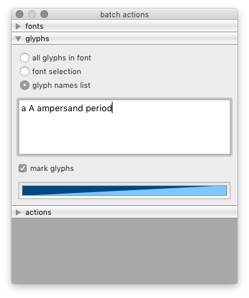
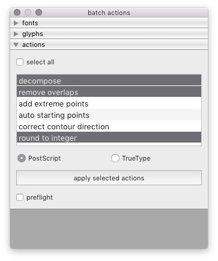

actions¶
A dialog to apply glyph actions in batch to selected fonts.
 fonts
Use the fonts panel to select on which fonts to apply the actions.
glyphs
Use the glyphs panel to define on which glyphs to apply the actions.
actions
Use the actions panel to select, order and apply actions.
-
class
BatchActionsDialog[source]¶ Bases:
hTools3.dialogs.batch.base.BatchDialogBaseA dialog to apply glyph actions in batch to selected fonts.
from hTools3.dialogs.batch.actions import BatchActionsDialog BatchActionsDialog()
-
title= 'batch actions'¶
-
key= 'com.hipertipo.hTools3.dialogs.batch.actions'¶
-
actions= ['decompose', 'remove overlaps', 'add extreme points', 'auto starting points', 'correct contour direction', 'round to integer']¶ A list of available glyph actions.
-
glyphSelectionOptions= ['all glyphs in font', 'font selection', 'glyph names list']¶
-
selectedActions¶ A list of selected actions.
-
glyphNamesMode¶ The selected glyph names mode.
-
contourType¶ The selected contour type (PostScript or TrueType).
-